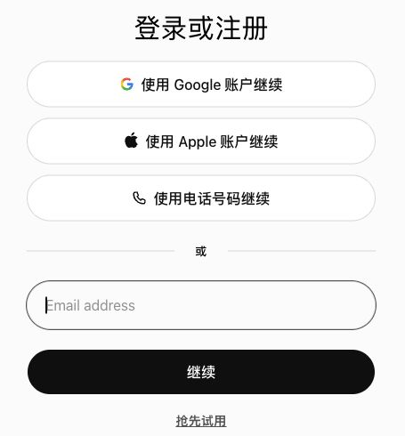
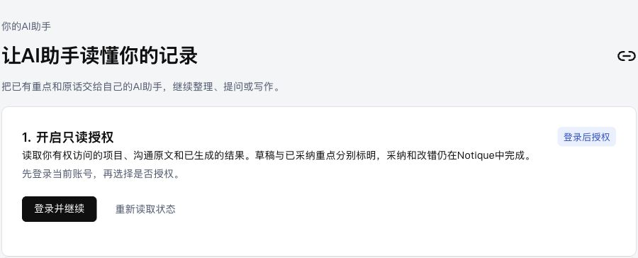

NOTIQUE / 连接自己的 AI 助手
用自己的账号，体验 Notique
给 Beta 测试用户和发布者的图文指南。网页与桌面版分别验证，让老板也能走一次新用户流程。
共享 Beta · 云端插件发布准备中开发者身份已通过验证，本站已有只读授权入口。云端插件尚未完成公开发布，也尚未完成老板账号的连接验收。下面标出的安装步骤，需发布者先提供实际可用的安装入口。
当前 Beta 共用一个工作空间。使用自己的 ChatGPT 账号不会自动获得独立的 Notique 资料空间；请仅使用允许 Beta 成员共享的测试资料。
测试用户：登录 → 授权 → 安装 → 提问
1登录自己的 ChatGPT 账号
从 ChatGPT 网页开始。选择自己平时使用的登录方式。不要借用发布者账号。桌面版也使用自己的账号。

实际登录页面截图；红圈表示可选登录入口，选择其中一种即可。
2在 Notique 开启只读授权
打开 Notique 连接页，点击红圈中的“登录并继续”。使用连接 AI 助手时的同一身份登录，再点击“开启只读授权”。确认页面显示当前账号和“已授权”。

这是未登录状态；登录后才会出现开启或断开授权按钮。
授权有效期为 30 天，到期需重新开启。连接只能读取有权访问的资料，采纳、改错和其他写入操作仍在 Notique 中完成。
3通过发布者提供的入口安装
此步骤目前等待云端插件发布。发布者完成审核和发布后，应提供真正的 Notique 插件安装链接。打开链接，检查插件名称、读取权限和授权账号，再连接。
站点创建者看到的“Personal → Created by you”是创建者自己的入口，其他账号不会因此看到它。下载的私人插件包也不会自动授予老板使用云端 App 的权限。
网页和桌面应使用支持相应客户端的云端插件入口。单纯导入远程 MCP 配置包的方式只适用于支持导入的桌面客户端，不能当成网页通用安装方案。
给熟悉 MCP 的测试用户
服务地址：https://notique-evidence-workspace.uclae2e12.chatgpt.site/mcp
手动创建连接还需要可用的 OAuth 客户端配置。目前观察到的手动创建页面要求客户端 ID，不能只粘贴网址就完成连接。请向发布者取得已经验证的配置，不要猜测 ID 或把 API 密钥填进登录字段。
4启用 Notique，先读项目，再核对原文
在新对话里选择或启用已连接的 Notique 插件。客户端入口名称可能不同，以实际插件列表为准。依次试这三句话：
如果没有调用 Notique 工具，先检查插件是否启用、本站授权是否有效、连接身份是否一致。没有资料时应返回空结果；不要让助手编造测试成功。
5断开授权，并分别验证网页和桌面
回到 连接页，点击“断开授权”。在新对话中再次请求读取资料，应被拒绝。断开授权不会删除此前已进入 AI 助手对话的内容。
| 验收项 | 需要看到的结果 |
|---|---|
| 老板自己的账号 | 可安装、身份一致、读到授权范围内的共享 Beta 资料 |
| ChatGPT 网页 | 列项目、读记录、核对证据均成功 |
| 目标桌面客户端 | 同样完成安装与实际工具调用 |
| 撤销授权 | 新的读取被拒绝 |
这些属于真实账号验收；代码测试通过不能替代这四项。
发布者：把 Beta 做成可安装的云端插件
1开发者验证已完成
你提供的截图显示个人身份“Verified / Approved”。这一步已通过。它表示具备身份验证条件，插件仍需单独审核与发布。

用户提供的真实验证截图，红圈标出 Approved。
2检查发布资料与现有云端 App
已准备：支持页面、隐私政策、使用条款和本教程。产品主页为 Notique 站点。Beta 免费、不涉及购买，计划覆盖平台允许发布的所有地区。
以现有 Sites App 为基础确认所有权和支持的发布路径，避免另建一个私人 App 造成两套连接。正式公开前，应核对共享 Beta 资料适合开放的范围；未来个人资料模式还需要用户系统和数据隔离。
3准备好审核材料，再上传发布包
在 Platform 的 Plugins 页面打开上传入口。红圈上方是已验证的开发者身份，下方是 Upload 按钮。

真实上传入口截图。上传创建审核草稿，并不直接公开上架。
下载的插件文件不等于完整审核材料。还需确认兼容的发布包、四个公开页面链接、OAuth 连接、实际演示视频，以及至少 5 个正向和 3 个负向测试案例。需要登录的功能须向审核方提供安全的测试访问方式。
目前实际演示视频、审核访问与真实账号工具测试仍待完成。不要把未测试案例写成已通过，也不要上传主账号密码、生产密钥或真实客户资料。
4审核通过后发布，交给老板验收
检查完整申请内容后，由发布者本人确认平台要求的声明并提交审核。批准后完成 Publish，再将实际安装链接发给老板，让他按上面的用户流程操作。
产品页面和本教程应同步更新实际安装链接和已验证的客户端支持范围。在审核和真实账号验收完成前，保留“发布准备中”的状态。
常见问题
把 MCP 网址填进插件搜索，为什么搜不到？
搜索框查的是可发现的插件列表；MCP 网址是服务端点。插件尚未公开发布时，搜索不到是预期情况。
已登录，为什么还不能读？
需要同时满足：客户端已安装并启用连接、OAuth 身份可用、本站授权有效、该身份有工作空间访问权限。登录或开启授权只完成其中一部分。
老板用自己的账号，会读到自己的资料吗？
目前读到的是获准访问的共享 Beta 工作空间。独立个人资料需要后续接入 Notique 用户系统和权限隔离。